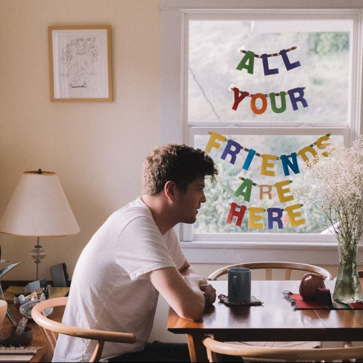
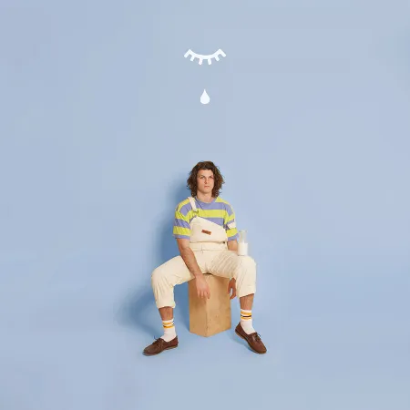

Electronic Music
Artists include Wingtip, Jake Scott, Baynk and more. Even my EDM is very lyric-focused. There's a range from upbeat pop to club beats. If you're looking for high-energy songs to get a party moving, here is the place to look! Wingtip and Zachary Knowles come out swinging with Hope Somebody Loves You and Eyes Closed, respectively. High-energy rhythmic artists make a good show too, from Splat by Connor Price to Champagne for Two by Devin Kennedy. Keep an eye on Taska Black, Mykyl, and ford., if loud electric music is your jam. I didn't add Sylvan Esso to the list for a few reasons, but depending on your taste, she may also be worth a listen.
Some of the worthy mentions
Wingtip, the second greatest artist of all time behind Noah Kahan. If you're me that is :)
For a while I was officially his top listener. His music is ponderous, rhythmic, danceable, and hopeful all at the same time.

Baynk tends to write about sex (albeit in a relatively romantic way), so be careful about putting his albums on shuffle, but 'Go With U' was what got me into EDM in the first place, and I've followed Baynk ever since. His songs on my SOS playlists are all sex-free, and the album linked to the image below is relatively clean.
A playlist with all of these artists is linked to the image below.